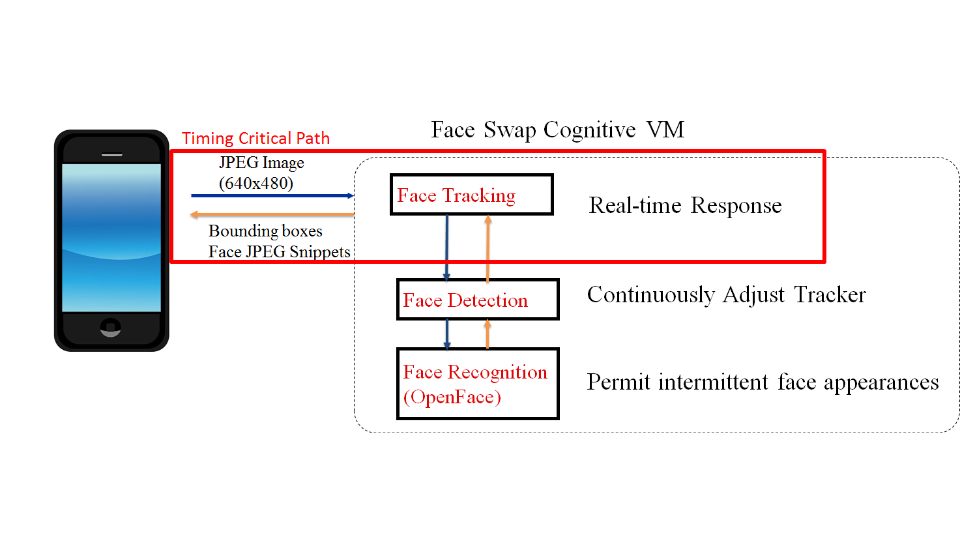

FaceSwap Architecture

FaceSwap Android client continously streams 640x480 images from the smartphone to the backend.
At backend, a three-tier hierarchy of face tracking, face detection, and OpenFace-based face recognition is employed. For each frame, once the face tracking result is available, bounding boxes and compressed pixels (JPEG) of all faces are then returned. Face detection and face recognition run outside of the critical path and opportunistically update trackers once their results become available.
From our experience, face detection and face recognition combined takes around 200ms while face tracking takes around 15ms. By using face tracking to mask long latencies of face detection and face recognition, we are able to achieve a higher frame rate.
Offload Latency Comparision

Here is a cumulative distribution function (CDF) graph of offload latencies when the offload site is a cloudlet or a cloud (Amazon EC2 Oregon). The offload latency is the sum of the network transmission time and server computation time.
Timing Breakdown

Here is a timing breakdown that explains the difference between cloudlet offload latency and cloud offload latency. Though the cloud has a shorter computation time due to a more powerful virtual machine, the cloudlet greatly reduces network latency. Image compression and rendering on mobile devices consume the same amount of time for both cases, therefore not contributing to the latency difference.